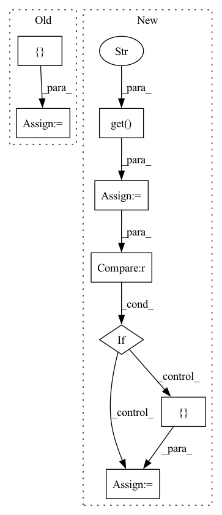

Pattern ID :8828
Before Change
max_displacement = 7.5
if parameters["patch_size"] is not None:
// define the control points and swap axes for augmentation
num_controls = []
for _, n in enumerate(parameters["patch_size"]):
num_controls.append(max(n, 5)) // always at least have 5
max_displacement = np.divide(num_controls, 10)
if num_controls[-1] == 1:After Change
def elastic(parameters):
// define defaults
parameters["num_control_points"] = parameters.get("num_control_points" , None)
parameters["max_displacement"] = parameters.get("max_displacement", None)
parameters["locked_borders"] = parameters.get("locked_borders", 2)
assert (
"patch_size" in parameters
), ""patch_size" must be defined for elastic deformation"
if parameters["num_control_points"] is None :
// define the control points and swap axes for augmentation
parameters["num_control_points"] = []
for _, n in enumerate(parameters["patch_size"]):
parameters["num_control_points"].append(max(n, 5)) // always at least have 5
if parameters["max_displacement"] is None:In pattern: SUPERPATTERN
Frequency: 4
Non-data size: 8
Instances Fragment ID: 32503919
Project Name: mlcommons/gandlf
Commit Name: b03e20cd6c6c5b1bdd52d88e3b6a27c8fb75cd45
Time: 2023-02-03
Author: sarthak.pati@hotmail.com
File Name: GANDLF/data/augmentation/wrap_torchio.py
M Class Name: AnonimousClass
N Class Name: AnonimousClass
M Method Name: elastic(1)
N Method Name: elastic(1)
M Parent Class:
N Parent Class:
M File Name: GANDLF/data/augmentation/wrap_torchio.py
N File Name: GANDLF/data/augmentation/wrap_torchio.py
M Start Line: 53
M End Line: 64
N Start Line: 53
N End Line: 71
Before Change
media_type = dataset_dict.get("media_type", None)
embedded_doc_inds = []
for idx, field in enumerate(dataset_dict.get("sample_fields", [])):
name = field.get("name", None)
ftype = field.get("dtype", None)After Change
field["fields"] = []
for field in dataset_dict.get("frame_fields", []):
ftype = field.get("ftype" , None)
embedded_doc_type = field.get("embedded_doc_type", None)
if ftype == "fiftyone.core.fields.EmbeddedDocumentField" :
try:
field["fields"] = _infer_fields(
db[dataset_dict["frame_collection_name"]],
name,
embedded_doc_type,
)
except Exception as e:
print(
"Failed to infer schema of embedded frame field "%s" "
"of type "%s": %s" % (name, embedded_doc_type, e)
)
field["fields"] = []
else:
field["fields"] = []
dataset_dict["app_sidebar_groups"] = None
db.datasets.replace_one(match_d, dataset_dict) Fragment ID: 32503915
Project Name: voxel51/fiftyone
Commit Name: f31fb2741432a5337b4ed96f49979fa51ae68041
Time: 2022-04-03
Author: brimoor@umich.edu
File Name: fiftyone/migrations/revisions/v0_16_0.py
M Class Name: AnonimousClass
N Class Name: AnonimousClass
M Method Name: up(2)
N Method Name: up(2)
M Parent Class:
N Parent Class:
M File Name: fiftyone/migrations/revisions/v0_16_0.py
N File Name: fiftyone/migrations/revisions/v0_16_0.py
M Start Line: 16
M End Line: 44
N Start Line: 13
N End Line: 71
Before Change
media_type = dataset_dict.get("media_type", None)
embedded_doc_inds = []
for idx, field in enumerate(dataset_dict.get("sample_fields", [])):
name = field.get("name", None)
ftype = field.get("dtype", None)After Change
field["fields"] = []
for field in dataset_dict.get("frame_fields", []):
ftype = field.get("ftype" , None)
embedded_doc_type = field.get("embedded_doc_type", None)
if ftype == "fiftyone.core.fields.EmbeddedDocumentField" :
try:
field["fields"] = _infer_fields(
db[dataset_dict["frame_collection_name"]],
name,
embedded_doc_type,
)
except Exception as e:
print(
"Failed to infer schema of embedded frame field "%s" "
"of type "%s": %s" % (name, embedded_doc_type, e)
)
field["fields"] = []
else:
field["fields"] = []
dataset_dict["app_sidebar_groups"] = None
db.datasets.replace_one(match_d, dataset_dict) Fragment ID: 32503928
Project Name: voxel51/fiftyone
Commit Name: 700c31ad6f19f9f7a5bc040bbf771fec9ae2db69
Time: 2022-04-27
Author: brimoor@umich.edu
File Name: fiftyone/migrations/revisions/v0_16_0.py
M Class Name: AnonimousClass
N Class Name: AnonimousClass
M Method Name: up(2)
N Method Name: up(2)
M Parent Class:
N Parent Class:
M File Name: fiftyone/migrations/revisions/v0_16_0.py
N File Name: fiftyone/migrations/revisions/v0_16_0.py
M Start Line: 16
M End Line: 44
N Start Line: 13
N End Line: 71